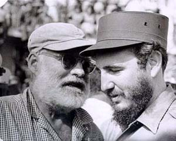

Fidel Castro Ruz (1926- )
[Fidel Castro con Ernest Hemingway]
Político y revolucionario cubano. Secretario general del Partido Comunista Cubano y Presidente del Consejo de Estado desde 1976. Nació en Birán, Cuba, el 13 de agosto de 1926. Hijo de un rico propietario español que pertenecía a la alta burguesía terrateniente, recibió educación católica. Estudió Derecho en la Universidad de La Habana, donde ya comenzó a interesarse por la política.
El 26 de julio de 1953, coincidiendo con el centenario de José Martí, dirigió el asalto al Cuartel de Moncada de Santiago de Cuba. Detenido y sentenciado por los tribunales, fue encarcelado hasta la amnistía de 1955. Ya en libertad, pasó a México, donde fundó el grupo denominado 26 de Julio para luchar contra la dictadura de Fulgencio Batista. En 1956, se hizo fuerte en Sierra Maestra, provincia de Oriente, desde donde inició, junto a su hermano Raúl, Camilo Cienfuegos y Che Guevara, la guerra de guerrilla que le conduciría a su entrada triunfal en La Habana el 1 de enero de 1959. Tres días más tarde, hizo proclamar presidente provisional a Manuel Urrutia, quien le nombró jefe de las Fuerzas Armadas. En febrero del mismo año se hizo cargo de la jefatura del Gobierno. Desde su nuevo cargo decretó la reforma agraria, nacionalizó las grandes compañías y propiedades y estableció relaciones con los países socialistas.
El 17 de abril de 1961 una fuerza de cubanos anticastristas, financiados por la CIA, intentó, sin éxito, invadir la isla por Bahía de Cochinos. Este hecho propició que las relaciones con el régimen de Estados Unidos degeneraran en un abierto conflicto que le llevaría a depender, cada vez más, de la Unión Soviética.
En 1962 Estado Unidos impuso duras sanciones económicas a Cuba a causa de la denominada crisis de los misiles. Sin embargo, no pudo evitar que la revolución castrista se exportara a América y áfrica, donde tuvo gran influencia hasta 1968. En 1975, durante la celebración del I Congreso del Partido Comunista Cubano, que sustituyó en 1965 al Partido Unido de la Revolución Socialista, fue confirmado como secretario general del Partido, y, en diciembre de 1976 fue elegido por unanimidad presidente del Consejo de Estado, cargo que, en virtud de la nueva Constitución, lleva inherentes la jefatura del Estado y del Gobierno. Como presidente del Movimiento de Países No Alineados (1979-1981) denunció ante la Organización de Naciones Unidas (ONU) las tremendas desigualdades entre los países, y exigió que los países más desarrollados ayudaran a los más pobres, lo que le dio un gran prestigio en el Tercer Mundo.
Tras la caída del bloque soviético, que acabó con el apoyo económico ruso, Cuba ha alcanzado niveles de crisis económica que desde finales de 1991 han situado a la isla al borde del colapso económico. Sin embargo, en julio de 1990, durante los actos conmemorativos del 37 aniversario de la Revolución cubana, Castro afirmó que, a pesar de los cambios habidos en el este europeo, Cuba nunca dejaría de ser comunista. La denominada crisis de los balseros, ocurrida en 1994, volvió a poner sobre la mesa la urgente necesidad de solucionar la grave crisis económica que estaba viviendo Cuba.